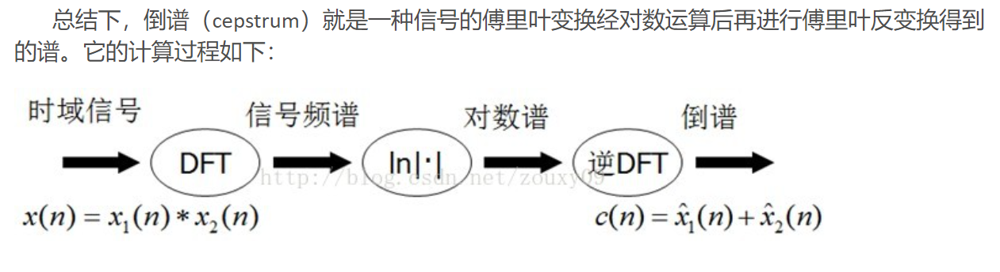
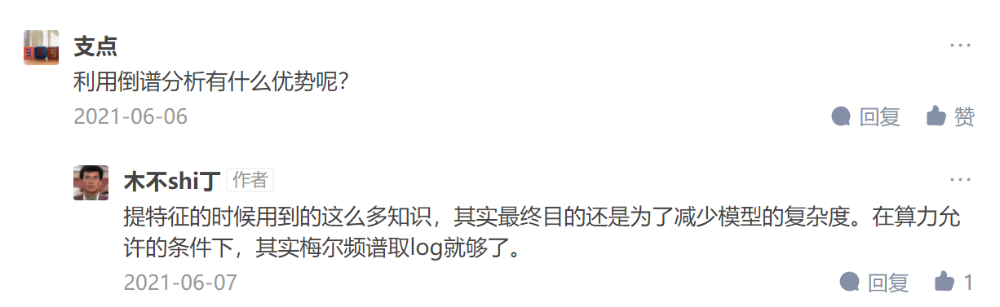

易方达项目笔记
https://www.zhihu.com/question/24190826
由于浊音是声带振动产生，所以浊音是与共振峰密切相关的，可以认为共振峰处就是元音
而一个元音，会同时受舌头的位置和嘴唇形状的复合影响，发音器官由于振动产生多个共振频率，所以一个音会有3~5个共振峰；
实验研究到，一个元音用三个共振峰表示，复杂的辅音或鼻音，要用五个共振峰；
有多少个共振峰，就代表有多少个共振频率；
语谱图是三维的，第一维横轴是时间，第二维纵轴是频率，第三维颜色是幅值；频率范围是该语音的采样频率的一半；
频谱图是二维的，第一维横轴是频率，第二维纵轴是幅值；
语谱图和频谱图的区别：频谱图只保留了频率和幅值信息而没有相位信息，而语谱图展示了频率、幅值和相位信息，换句话说语谱图展示了各个频率的谐波
-
多数语言中的元音均为浊音
-
汉明窗在窗口的边界处把信号值收缩到零，从而避免了信号的不连续性
-
可能测量的最大频率的波就是那些频率等于抽样率一半的波（因为每周需要两个样本）
-
电话语音使用的一个常见的压缩格式是律，是一种对数压缩算法，解释是人类的听觉在音强较小时比音强较大时更加敏感
-
基音频率（基频）：当声带开合振动时，会出现有规则地波峰，每一个主峰相应地是由于声带开启而形成的。声带振动的这个频率，称为波形的基音频率
-
由于不同的元音在特征位置具有不同的共振峰，因此，频谱可以把不同的元音彼此区分开来。
-
前两个共振峰的位置对于元音的辨别起着很大的作用，尽管不同说话人的共振峰不尽相同。较高的共振峰大多数是由于说话人声腔的普遍特征引起的而不是由个别的元音引起的。
-
谐波的频率是基波的倍数，但是振幅低于基频的波
-
语音的音高是与人的感知有关的。人的听觉对于不同的频率的敏锐性是不同的。100Hz~1000Hz之间，人的音高感知是最敏锐的，在这个范围内，音高和频率是线性相关的。人的听觉在1000Hz以上，就变得不够敏锐了，超出这个范围，音高与频率就是对数相关的了。
-
mel，是一个音高的单位：如果一对语音在感知上它们的音高听起来是等距离的，那么，它们就是以相同数目的mel被分开的
-
Mel滤波器组：在Mel频率范围内，这些滤波器是等带宽的。
-
倒谱（cepstrum)一种信号的傅里叶变换谱经对数运算后再进行的傅里叶反变换。
https://zhuanlan.zhihu.com/p/67707430
 -
Mel频率分析就是基于人类听觉感知实验的。实验观测发现人耳就像一个滤波器组一样，它只关注某些特定的频率分量（人的听觉对频率是有选择性的）。也就说，它只让某些频率的信号通过，而压根就直接无视它不想感知的某些频率信号。但是这些滤波器在频率坐标轴上却不是统一分布的，在低频区域有很多的滤波器，他们分布比较密集，但在高频区域，滤波器的数目就变得比较少，分布很稀疏。
-
梅尔频率倒谱系数（Mel Frequency Cepstrum Coefficient, MFCC）考虑到了人类的听觉特征，先将线性频谱映射到基于听觉感知的Mel非线性频谱中，然后转换到倒谱上。
-
预加重：NLP教材+https://blog.csdn.net/jojozhangju/article/details/18678861?spm=1001.2101.3001.6650.2&utm_medium=distribute.pc_relevant.none-task-blog-2%7Edefault%7ECTRLIST%7ERate-2-18678861-blog-9156785.pc_relevant_3mothn_strategy_recovery&depth_1-utm_source=distribute.pc_relevant.none-task-blog-2%7Edefault%7ECTRLIST%7ERate-2-18678861-blog-9156785.pc_relevant_3mothn_strategy_recovery&utm_relevant_index=3
-
对语音信号的频谱取模平方得到语音信号的功率谱
-
自注意力机制能够减小对分类性能不利的时序帧的影响，让网络集中捕捉情感丰富的部分